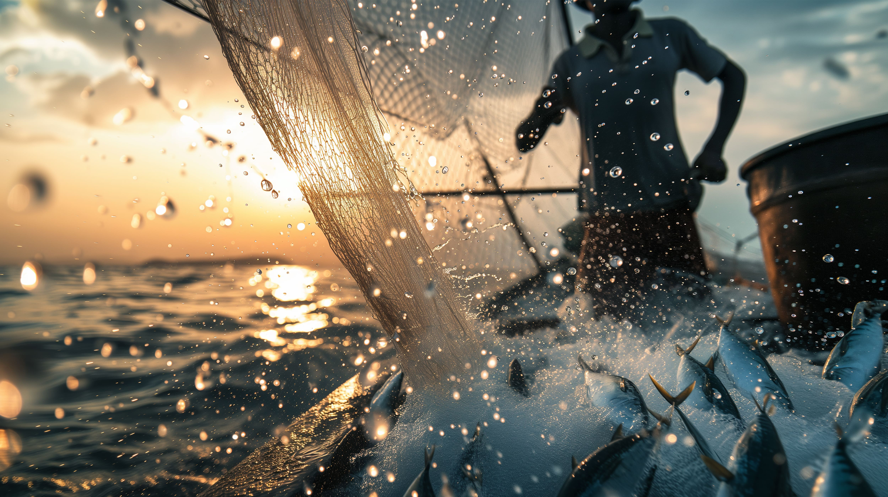
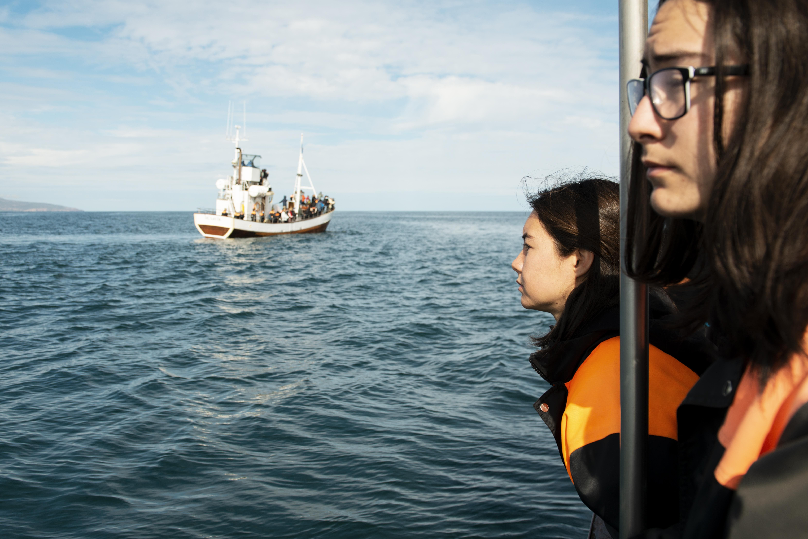
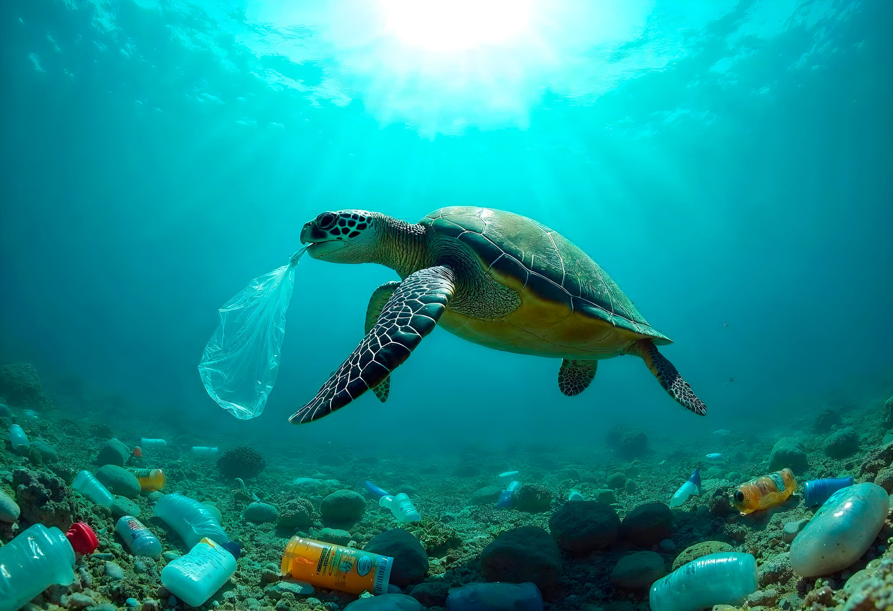

Nuestro apetito por los peces causa estragos en poblaciones acuáticas de todo el mundo. El World Wildlife Fund prevé que si las pesquerías de bacalao continúan sometidas a la misma pesca que ahora, no quedarán bacalaos en 2022.

Un solo buque de carga puede transportar mercancías suficientes para sustituir a casi 3000 semirremolques. Por eso algunos abogan por un auge del transporte marítimo en los famosos lagos de Estados Unidos.

Descubre cómo la contaminación del agua nos afecta a todos: de océanos y mares, al grifo de casa.

El exceso de dióxido de carbono está teniendo efectos graves en el agua de nuestros mares, incluso está poniendo en peligro a los animales con caparazón. Te explicamos cómo se produce este proceso.